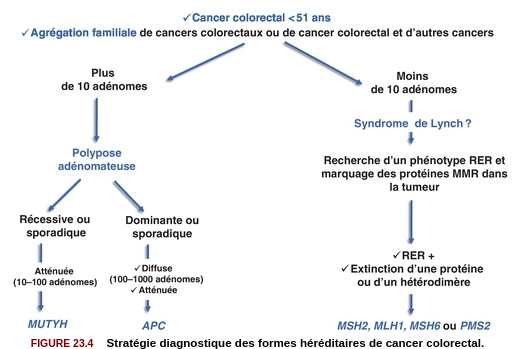

Quelle(s) complication(s) est/sont à redouter chez l’adulte trisomique 21 ?
Quelles complications sont à redouter durant la première année de vie chez un(e) enfant porteur/euse de trisomie 21 ?
Les enfants porteurs de trisomies 21 sont plus fréquemment soumis à :
Quelle(s) est(sont) la(les) malformation(s) digestive(s) la(les) plus fréquente(s) chez un nouveau-né trisomique 21 ?
Le diagnostic de trisomie 21 en période anténatale s’effectue avec :
Quelle est la malformation à rechercher en priorité à la naissance chez un enfant porteur de trisomie 21 ?
Quel organisme est chargé de l’orientation des enfants trisomiques 21 ?
Quelle complication biologique doit être recherchée régulièrement chez les enfants porteurs de trisomie 21 ?
Quelle complication néoplasique est à redouter particulièrement chez les enfants porteurs de trisomie 21 ?
Prise en charge des femmes porteuses d’une mutation d’un gène BRCA

Prise en charge des porteurs et porteuses d’une mutation d’un gène MMR
| Forme héréditaire de cancer | Gène | Name |
|---|---|---|
| I. Activation constitutive de la cascade de transduction | ||
| Cancer médullaire de la thyroïde (CMT) | RET | REarranged during Transfection |
| Cancer papillaire du rein | MET | Mesenchymal Epithelial Transition |
| Maladie de Cowden | PTEN | Phosphatase and TENsin homolog, |
| Maladie de Von Hippel Lindau | VHL | idem |
| Médulloblastome | SUFU | Suppressor Of Fused Homolog (hedgehog !) |
| Neurofibromatose de type I | NF1 | idem |
| Polypose adénomateuse familiale | APC | Adenomatous Polyposis coli |
| Syndrome de Gorlin | PTCH | PaTCH |
| Tumeur de Wilms | WT1 | Wil’s Tumor |
| II. Altération des points de contrôles du cycle cellulaire | ||
|---|---|---|
| Rétinoblastome | RB1 | idem |
| Mélanome malin | CDKN2A | Cyclin Dependent Kinase Inhibitor |
| Syndrome de Li-Fraumeni | TP53 | Tumor Protein |
| III. Altération des systèmes de réparation de l’ADN | ||
| Cancer du sein et de l’ovaire | BRCA1, BRCA2 | BReast CAncer |
| Polypose adénomateuse autosomique récessive | MUTYH | Mut Y DNA glycosylase |
| MLH1 | MuLt Homolog | |
| Syndrome de Lynch | MSH | DNA repair MiSmatcH |
| Xeroderma pigmentosum | XP | idem |
| Autres | ||
|---|---|---|
| Cancers bronchiques | ALK | Activin receptor-Like Kinase 1 |
| Carcinomes colique, bronchiques | KRAS | Kirsten RAt Sarcoma viral oncogene homolog |
| Carcinomes sein, ovaire | HER2 | Human Epidermal growth factor Receptor 2 |
| Carcinomes+++, gliomes | EGFR | Epidermal Growth Factor Receptor |
| GastroIntestinal STromal Tumor | KIT | |
| Leucémies aigües myéloïdes | FLT3 | Fms-Like Tyrosine kinase 3 |
| Leucémies, mélanomes | NRAS | Neuroblastoma-RAS |
| Lymphome de Burkitt | C-MYC | Cellular MYeloCytomatosis |
| Lymphomes du manteau | Cycline D | |
| Mélanome | CD4 | Cluster of differentiation 4 |
| Mélanomes | BRAF | |
| Neuroblastomes | N-MYC | |
| Sarcomes, gliomes | PDGFR | Platelet-derived growth factor receptors |